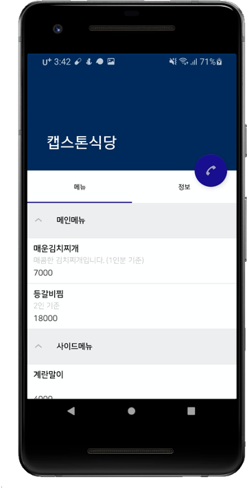
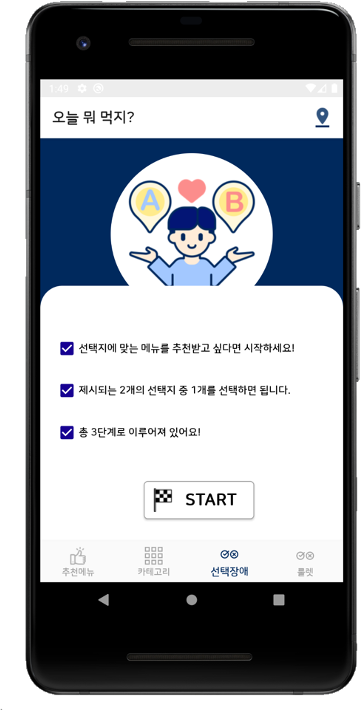

일상 생활 속 '오늘 뭐 먹지?'는 흔한 고민입니다. 본 과제는 대학생들이 메뉴를 고민하는 시간을 줄여주기 위해 메뉴를 추천하고 그에 맞는 음식점을 제시하는 서비스입니다. 웹은 음식점 사장님들의 특정 지역 마케팅 수단으로, 앱은 서비스를 이용할 대학생들에게 음식점과 메뉴를 추천하는 도구로 제시합니다.
Function
대학교 선택
추천 메뉴
카테고리
선택지를 통한 메뉴 추천
검색과 일일 검색 순위
Used Stack
Kotlin
Retrofit2
Kakao Map API
AnKo
GitHub
Android
Development
애플리케이션의 주목적은 '오늘 뭐 먹지?' 고민하는 대학생들에게 메뉴 추천과 그에 해당하는 음식점을 보여 줌으로써 식사를 고르는 데 도움을 주는 것입니다.
클라이언트 측 과제를 수행하기 위해서는 서버와의 통신이 필요합니다. 서버와 클라이언트 간 http 통신을 위한 인터페이스로 Retrofit을 사용함으로써, 클라이언트에서 서버로 요청을 보내면 서버는 그 요청에 대한 응답을 클라이언트에게 JSON 형태로 응답하게 됩니다. UI 부분이 사용자에게 직접적으로 노출되다 보니 디자인을 더욱더 나아 보일 수 있도록 라이브러리를 사용합니다.
본 애플리케이션은 4가지 기능을 포함합니다.
첫째는 대학별 맞춤 음식점을 추천하기 위한 대학교 선택입니다. 이 액티비티는 최초 실행 시에만 띄워 계속된 사용에 불필요한 화면을 띄우지 않도록 합니다. 이 편리함을 제공하기 위해 대학교 최초 선택 시에만 SharedPreferences를 사용하여 학교 이름을 파일로 저장하고, 다음 실행 시에 파일을 불러 학교를 자동으로 설정할 수 있도록 합니다.
둘째는 메뉴를 정하지 못한 사람들을 위해 임의로 추천 메뉴를 제시합니다. 추천된 메뉴에서 식당 바로 가기 버튼을 클릭할 수 있습니다. 버튼 클릭 시, 메뉴와 대학 이름을 Path로 담아 서버로 요청을 합니다. 응답받은 데이터를 가공하여 사용자에게 음식점 리스트를 보여 줍니다. 제시된 음식점 목록에서 아이템을 클릭하면 해당 음식점의 메뉴와 정보를 볼 수 있습니다. 음식점 정보에는 위치, 전화번호, 오픈 시간 등 사용자에게 필요한 정보를 제공합니다. Kakao Map API를 사용하여 음식점의 위치를 마커로 표시함으로써 사용자가 보기 쉽도록 구성했습니다. 또한 음식점에 전화를 바로 거는 편의를 제공하기 위해 FloatingActionButton을 띄워 버튼 클릭 시 다이얼로 음식점의 번호가 넘어갈 수 있도록 인텐트 처리를 해주었습니다.

셋째는 대학가에 어떤 음식점들이 있는지 알고자 하는 사람들을 위해 카테고리를 제공하는 것입니다. 카테고리는 GridView로 배치를 하고, 아이템 선택 시 대학 이름과 카테고리 이름으로 서버에 요청한다. 사용자에게 응답에 대한 리스트를 보여주고, 사용자 선택에 대한 카테고리에서 다른 카테고리로 넘어가는 데 어려움이 없도록 TabLayout을 사용하여 편리함을 제공했습니다.
넷째는 음식의 특징을 제시하고, 사용자가 선택한 특징들을 통해 메뉴와 음식점을 추천해주는 맞춤형 서비스를 제공하는 것입니다. 사용자의 선택에 따라 프래그먼트를 바꿔주고, 최종 프래그먼트에 도달했을 때 해당하는 메뉴를 추천하는 것입니다.

Problem solving process
제시된 음식점 목록에서 아이템을 클릭하면 해당 음식점의 메뉴와 정보를 볼 수 있습니다. 애플리케이션은 사용자가 직접 마주하기 때문에 디자인과 편리함에 힘을 주는 것이 옳다고 생각하여 이 부분은 CoordinatorLayout을 사용했습니다. CoordinatorLayout도 스크롤이 필요하고, 메뉴를 보여주는 ListView도 스크롤이 필요했습니다. 이중 스크롤이 자연스럽게 동작할 수 있도록 해야 했는데, 레이아웃들의 배치를 바꿔 봐도 스크롤이 제대로 동작하지 않는 문제가 발생했습니다. 예제를 찾아보았지만, 제가 원하는 답을 얻을 순 없었습니다.
저는 항상 문제를 마주할 때마다 기본을 모르기 때문에 문제가 발생하는 것이라 생각합니다. 그래서 안드로이드 도큐먼트에서 CoordinatorLayout의 동작 원리에 대해 파악을 하고, ListView는 사용할 수 없다는 것을 깨달았습니다. NestedScrollingChild가 구현된 리스트를 사용해야 한다는 것을 알 수 있었습니다. 그 중 RecyclerView와 ExpandableListView가 눈에 들어왔는데, 각 메뉴도 카테고리가 있어야 함을 생각하여 ExpandableListView를 사용하게 되었습니다.
Demonstration
CrossWalk
볼라드는 자동차가 인도에 진입하는 것을 막기 위해 차도와 인도 경계면에 세워두는 구조물이다. 볼라드는 다소 외형이 투박하고 주변 경관과 잘 어울리지 않으며 정확한 설치 기준이 없다. 또한, 차량 충돌 방지의 단일 기능만 하므로 필요성이 느껴지지 않는다. 이런 볼라드를 횡단 보도에 설치하여 여 여러 효과를 얻고자 한다.
Function
보행자 신호 색에 맞춰 LED 색을 띄운다.
센서로 무단 횡단을 감지하여 경고음 출력.
근처 사고 시, 버튼으로 경찰에 자동 신고.
Used Stack
Arduino
NodeMCU
Sensor Control
Development
기존의 볼라드는 차량이 인도로 진입하지 못하게 하는 단일 기능만 합니다. 이런 볼라드를 횡단보도에 설치하여 새로운 사용 방안을 제시해보았습니다. CrossWalk는 기존의 볼라드를 활용하여 무단횡단 방지와 무단횡단 사고 시를 위한 새로운 방법입니다. 무단횡단을 방지할 수 있도록 보행자에게 신호 색을 인식시키고, 근처 사고 시 버튼으로 경찰에 자동 신고될 수 있도록 SOS 기능을 탑재하는 것입니다.
저는 볼라드에 장착할 센서들의 제어를 담당했습니다. Arduino에는 LED strip, 적외선 센서, 스피커를 연결했습니다. 보행자 신호 색에 맞춰 LED strip에 색을 띄워 보행자 신호를 강조합니다. 또한, 보행자 신호가 빨간불일 때 적외선 센서에 값이 인지되면 무단횡단으로 간주하여 경고음을 출력합니다.
핵심 기능은 SOS입니다. DB에는 버튼 번호와 위치를 애트리뷰트로 저장했습니다. 버튼이 눌렸을 때, 버튼의 번호를 서버로 전달합니다. 서버로 전송하기 위해서는 통신이 필요했는데, 이 통신은 NodeMCU 보드를 사용하여 서버와 Wifi 통신을 했습니다. 서버는 버튼의 위칫값을 DB에서 찾아 경찰서에 해당 위치에 사고가 발생했음을 SMS로 신고하게 됩니다.
이 프로젝트는 성공적으로 마무리했고 2019학년도 스마트시티 캡스톤 디자인 챌린지 대회에서 우수상을 받을 수 있었습니다.
볼라드의 새로운 기능을 통해 무단횡단을 감소하고, 사고 발생으로 인한 신고 시 위치 설명에 어려움 없이 신속한 신고가 가능할 것으로 기대합니다.
Problem solving process
아두이노에서 LED strip으로 빨간색을 띠면서, 빨간색일 경우에는 적외선 센서를 동작시켜야 하는 동시 제어가 필요했습니다. LED strip을 보행자 신호 시간에 맞춰 delay( )를 사용해 색을 유지하고, 빨간색인 시간 동안 적외선 센서의 값을 받아올 수 있도록 코드를 작성했습니다. delay( )를 사용하니, 정해진 시간 만큼 프로그램이 멈춰 코드 전체가 뒤로 밀리는 현상이 생겼습니다. 즉, LED strip과 적외선 센서가 병행해서 사용할 수 없는 문제가 발생했습니다. 아두이노는 싱글 스레드로 동작하기 때문에 멀티테스킹이 될 수 있도록 구현해야 했습니다. 이 문제를 해결하기 위해 delay( ) 대신 millis( )를 사용했습니다. 매 루프마다 millis( ) 함수를 사용해서 현재 아두이노의 시간이 몇 ms 인지 파악하고, 보행자 신호 시간에 맞춰 LED strip Color에 관련된 함수를 실행할 수 있도록 구현했습니다.
시간을 다루는 것은 매우 까다로운 작업이었습니다. 원하는 동작이 원활히 이루어질 수 있도록 하기 위해 millis( )의 개념을 공부하는 것이 중요했고, millis( )를 활용해서 여러 제어를 도전하니 사용 방법을 익힐 수 있었습니다. delay( ) 대신 millis( )를 사용하여 아두이노에서 멀티테스킹이 가능할 수 있도록 구현하니 정상적으로 동작하는 것을 확인할 수 있었습니다.